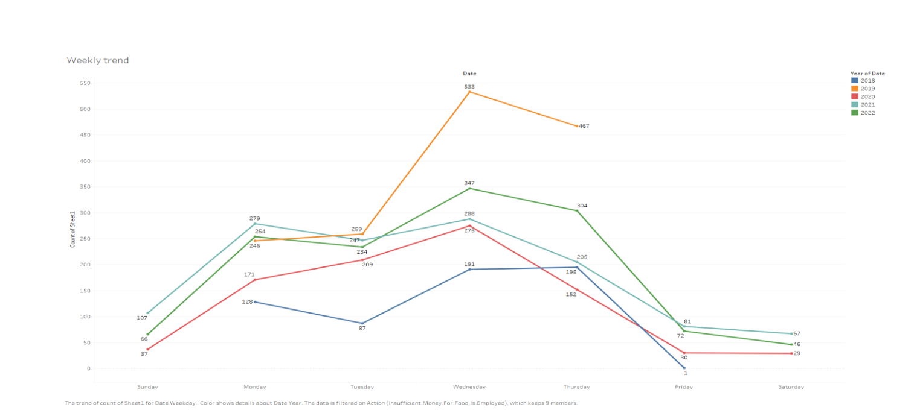
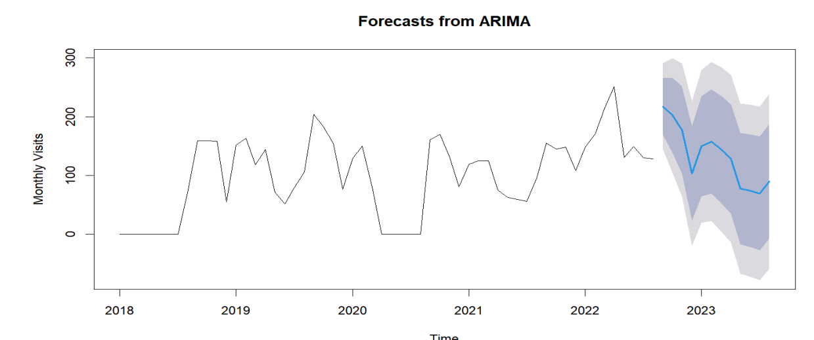
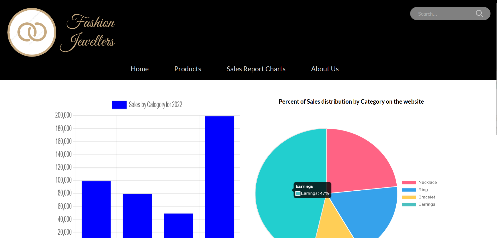
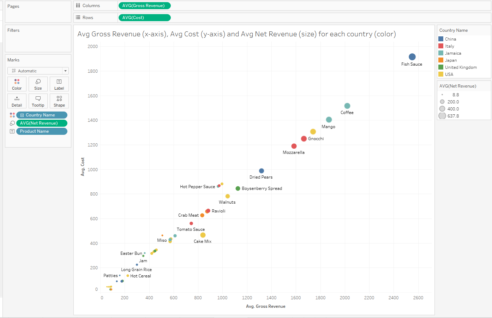
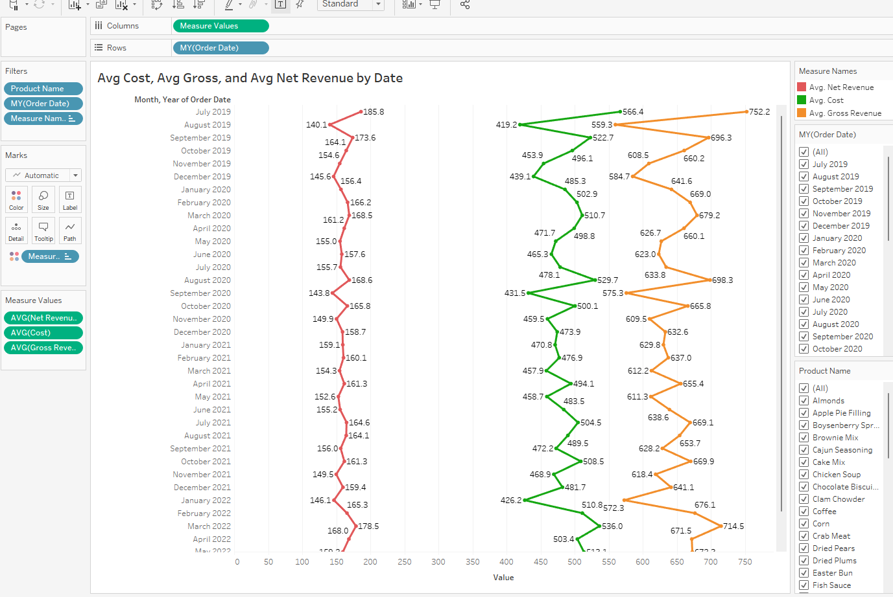
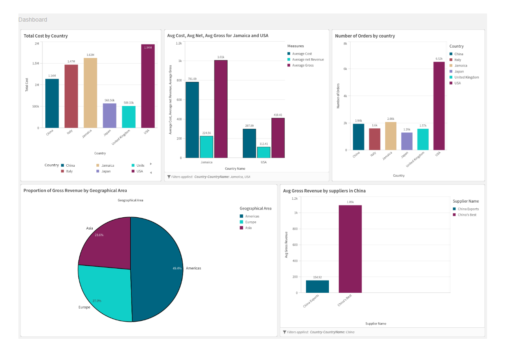
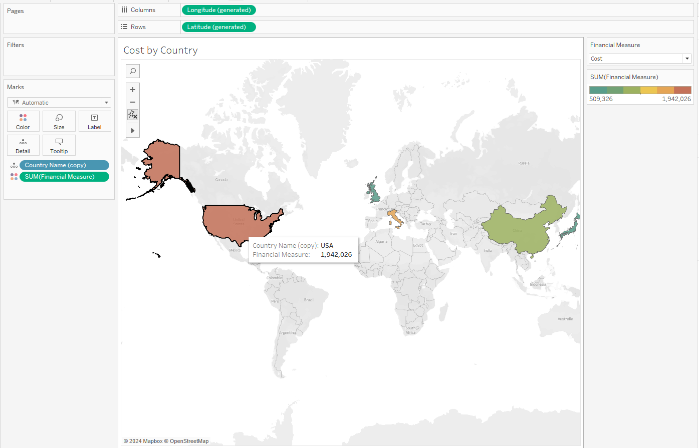
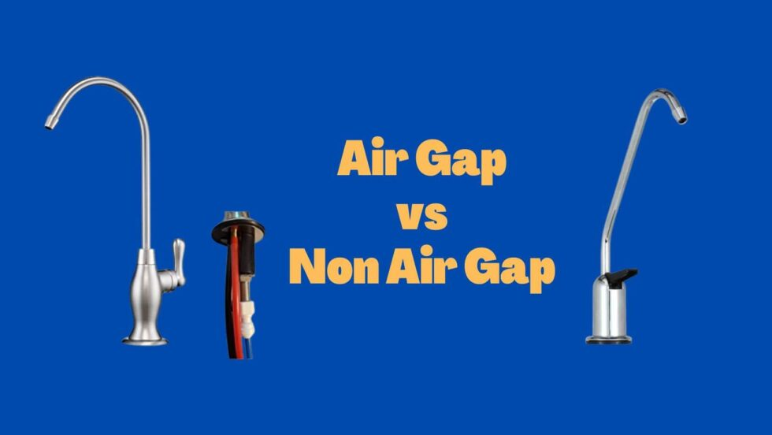

Software Developer
TATA Consultancy ServicesAugust 2019 - June 2022
• Developed, tested, and delivered key roadmap features such as ship-from-store, search refinements, data ingestion, outgoing catalog feeds, recommendation engine and integration with Manhattan OMS for an e-commerce website using JavaScript, Node.js, ISML, jQuery and Java on Salesforce Commerce Cloud.
• Implemented end to end integrations for analytical tools like Google and Adobe Analytics to track engagement, conversions, cart add, sign-ups, checkout, mini cart, etc.
• Optimized daily batch jobs, catalog data dumps and worked extensively to help bring down job failures due to database locking and other factors by 36%.
• Redesigned the website’s recommender systems to add product recommendations on product display pages, search bar, and developed business friendly feature flags to seamlessly shift between two different product recommendation providers (Certona and Einstein).
Research Assistant
University of South Florida, Tampa, FLMay 2023 – August 2023
• Worked with my mentor on Florida Department of Education’s Digital Information Technology (DIT) grant to analyze Florida’s Career and Professional Education Act (CAPE) to understand the - Funding and economic development aspects of DIT, Impact of industry certifications and look at the underlying motivators & beneficiaries of the program.
• Using Python and SQLite3, developed custom ETL pipeline to import data using Kimball’s dimensional data modeling approach of - identifying granularity, dimensions, and facts - built a comprehensive Data Warehouse .
• Extensively queried the data-warehouse using SQL to extract and analyze features for patterns across school districts, impact of teacher compensations & technology accessibility, and take a deep look at the program’s paradoxes.
Graduate Teaching Assistant
University of South Florida, Tampa, FLAugust 2023 – December 2023
• Working as a Teaching Assistant for Analytical Methods of Business instructing in Statistical concepts like Hypothesis testing, confidence intervals, GLM, ANOVA, Logistic Regression using R Studio to graduate and MBA students.
Your next hire
Janurary 2024 -
Kinda bold of me, but I'm quite sure I can convince you over an interview. Let's talk.
Image Classification and Model evaluation with Deep Learning (CNN, ResNet50, HuggingFace)
This ASL Image Recognition project aims to enhance communication for the Deaf community using advanced technology. Leveraging Convolutional Neural Network (CNN) and ResNet models, we explore the intersection of sign language and data science.
Motivation:
The motivation behind this initiative lies in the potential of technology to improve accessibility for the Deaf, dumb, and hard-of-hearing community. We see American Sign Language (ASL) recognition as a gateway to empowering individuals in education, employment, and daily communication.
Business Questions:
While focusing on multi-class image classification, we explore the broader business implications. Can this model extend beyond ASL applications? Is it robust enough for other image classification tasks?
Data Overview:
Our dataset comprises 2515 ASL images, covering 36 classes. Each class represents a letter or number, forming the basis of our model training.
Model Approach:
We employ Convolutional Neural Network (CNN) architecture and ResNet-50, both recognized for their efficiency in image-related tasks. The choice of models is driven by their ability to capture intricate features and patterns in ASL gestures.
Training and Evaluation:
In our evaluation, the CNN model demonstrates strong performance, with a testing accuracy of 97.82%. However, the ResNet-50 model outshines with a remarkable testing accuracy of 98.81%, showcasing superior generalization capabilities.
Business Applications:
The applications of our ASL recognition technology extend beyond its primary goal. There's potential in market expansion, catering to the needs of the Deaf and hard-of-hearing customers. Furthermore, the adaptability of our models allows seamless integration into various applications beyond ASL.
Conclusion: Both the CNN and ResNet-50 models contribute significantly to ASL recognition technology. The ResNet-50, with its impressive accuracy, emerges as the preferred choice, emphasizing its transformative potential in addressing societal challenges related to accessibility and communication.
Analyzing disparities in life expectancy across US states with Regression Modeling (Fixed Effects, Multi-Level) – A Statistical Data Mining Project

The primary goal of this project was to investigate and understand the disparities in life expectancy across different states in the USA. By utilizing statistical data mining techniques, the project aimed to provide valuable insights into the factors contributing to variations in average age at death, ranging from 66.8 years to 86.8 years across America. The outcomes of this analysis are crucial for businesses and policymakers to address health-related challenges and make informed decisions.
Data Collection and Integration:
- Downloaded and combined data spanning the years 2019-2023 from diverse sources, including census reports, county health rankings, and state health data.
- Utilized R Studio and Tableau Prep Builder for efficient data processing and feature engineering.
Exploratory Data Analysis (EDA): Conducted a comprehensive exploratory data analysis to gain a preliminary understanding of the dataset. Examined statistical measures, distributions, and patterns in life expectancy data.
Correlation Analysis:
- Checked for correlations between various demographic and health-related variables to identify potential influencing factors.
Modeling and Interpretation:
- Applied fixed effects and multi-level models to estimate the impact of each variable on life expectancy.
- Interpreted model coefficients to discern the significance of each contributing factor.
Recommendations:
Provided granular recommendations based on the analysis results, highlighting key factors that contribute the most to reduced life expectancy. These recommendations serve as actionable insights for businesses and policymakers to address health disparities effectively.
Exploratory Data Analysis and Forecasting Demand at USF's Feed-A-Bull Food Pantry (Time-Series Modeling, ARIMA) – Data Mining Project

This project focused on addressing the demand forecasting challenges faced by USF's Food Pantry. By leveraging data mining techniques, the goal was to provide accurate and actionable insights to optimize inventory management and meet the needs of the community. The project's value to the food pantry lies in its ability to make informed decisions based on a thorough understanding of demand patterns over time.
Data Gathering and Cleaning:
- Gathered, compiled, and cleaned survey data collected by Feed-A-Bull food pantry over the past 5 years.
- Implemented data normalization techniques to ensure consistency and accuracy in the dataset.
Exploratory Data Analysis (EDA):
- Conducted exploratory data analysis to uncover patterns, trends, and potential outliers in the data.
- Examined statistical measures and visualized key features to gain insights into the nature of the dataset.
Analytic Techniques Testing:
- Utilized various analytic techniques, including regression models, to analyze the relationship between different variables and demand.
- Applied time series analysis techniques such as ARIMA and Facebook’s Prophet to capture temporal patterns in demand.

Trend Presentation:
Presented daily, weekly, and yearly trends in demand using visualization tools such as Tableau, Python, and R Studio. Generated future projections based on the analyzed data to assist in proactive decision-making.
Building an e-commerce website with JavaScript and Flask
Developed an e-commerce website complete with a Home Page, Product Display and Landing Pages, integrations with chart.js to power interactive graphics, dynamic webpages, image carousels using HTML, CSS, JavaScript, Python and Flask.
Home Page
Product Listing Page

Product Display Page (with very reasonaly priced diamond earrings)
Interactive Sales Reports Page
A non-exhaustive collection of Data Visualizations with Tableau/PowerBI/QlikSense/RStudio
A general catalog of a few visualizations I've created for professional/personal/academic projects over the years using various tools
Scatterplot with 4 parameters
Average Cost, Revenue and Gross by OrderDate (Animated)
Cost, Gross and Net over time (Filtered)
Filtered Graphs
A basic dashboard in QlikSense
Cost by Country
Animated Scatterplot
My take on "Human-Centered Artificial Intelligence and Workforce Displacement"

With the advent of AI, there is a lot of speculation on when companies will stop seeing AI as a helper and start seeing it as a substitute for humans. Personally, I don’t think we can really count on companies to do the right thing and not replace workers with AI where they can, but the article highlights an interesting point, “Development of AI must be guided by its human impact.” Right now, it seems like the tech industry is all about rushing to be the first to do something with AI, without really thinking about whether it's good for us. It’s kind of like that famous line from Steven Spielberg's Jurassic Park, "Your scientists were so preoccupied with whether or they you could, they didn't stop and think if they should."
It feels like the tech world is in that mode, being the first to try things out without really caring about how it affects the world. But as the AI hype settles down, the tools that will stand the test of time are the ones that make our work better, not just replace it. This article is a reminder that we need to take a step back and think about how AI can work alongside us, become a powerful addition to improve our jobs, and not leave us in the dust.
Let’s consider the healthcare industry. As artificial intelligence becomes more integrated into the healthcare sector, it has the potential to revolutionize patient care and streamline operations. AI applications can enhance diagnostic accuracy, personalize treatment plans, and automate routine administrative tasks. For instance, AI algorithms analyzing medical images can assist doctors in identifying anomalies with greater precision, leading to quicker and more accurate diagnoses. This not only improves patient outcomes but also allows healthcare professionals to focus on more complex aspects of patient care.
On an organizational level, the implementation of AI in healthcare may lead to increased efficiency in managing patient records, optimizing resource allocation, and improving overall operational workflows. However, it also raises questions about data security and patient privacy, requiring organizations to invest in robust cybersecurity measures.
The impact on careers in the healthcare industry is significant. While AI streamlines certain tasks, it also creates a demand for professionals skilled in managing and interpreting AI-generated insights. Healthcare workers may need to adapt by acquiring AI-related skills to collaborate effectively with these technologies. The rise of AI in healthcare doesn't replace the human touch; instead, it augments the capabilities of healthcare professionals.
In the end, the trajectory of AI in our workforce is a fascinating journey, one that prompts reflection on the responsible integration of technology into our lives. As the article suggests, the key lies in maintaining a human-centric approach to artificial intelligence. Beyond the buzz and hype, it's crucial to envision a future where AI complements our skills, making our work not just efficient but profoundly meaningful. Whether it's in healthcare, another industry, or the vast landscape of our professional endeavors, the true potential of AI lies in its alignment with human values, ensuring a future where both man and machine thrive in harmony.
The rise of Artificial Intelligence and the future of employment
Artificial intelligence (AI), according to Wikipedia, is intelligence—perceiving, synthesizing, and inferring information—demonstrated by machines, as opposed to intelligence displayed by non-human animals and humans. Artificial intelligence as a concept first came into the limelight in the middle of the 20th century. Now, about 70 years later, AI tools are becoming increasingly common, smarter, and more capable of replacing jobs which traditionally needed a human employee.
Increasingly, fast food restaurants are becoming more automated, delivery services in some places are being carried out by robots, and self-driving technology is getting increasingly common. AI has proliferated into the legal world too, with an AI-powered robot lawyer heading into a US court to argue a case. A recent article revealed that CNET has been publishing articles written by AI since November 2022, bearing the byline “CNET Money Staff” which is identified on their website as “AI Content published under this author byline is generated using automation technology”.
Recent versions of publicly available consumer AI tools like ChatGPT have taken the tech community by storm with its ability to write articles, essays, and even code in seconds, with varying quality prompting its ban from many forums and even a word of caution by Dr Marcus Green against its use to complete this assignment. As tools like OpenAI’s ChatGPT are released onto the market, it appears that we are at the cusp of an industry-wide shift as companies explore and harness this technology to reduce reliance on expensive employees and improve productivity and profits.
Now, this begs the question, are there any professions that are not at risk of being replaced by robots or AI?
A paper released by Oxford University a few years ago titled "The future of employment: How Susceptible are jobs to computerization" showcased research into estimating the probability of computerization for 702 detailed occupations, using a Gaussian process classifier. This paper included a table ranking occupations according to their probability of computerization with Recreational Therapists, First-Line Supervisors of Mechanics, Installers, and Repairers, and Emergency Management Directors taking the top 3 spots for professions that would not be at risk with computerization probability scores of less than 0.003. On the other end of the spectrum, Sewers, Title Examiners, Abstractors, and Telemarketers held the last 3 positions on the list as positions most likely to be at risk with a computerization probability of 0.99.
Let us now look at some other professions that are unlikely to be at risk, taking inspiration from public comments in response to a similar question asked in an online forum.
Education
While educational content is abundantly available for free across the internet, the need for teachers will always exist. Primarily in early childhood education, babies and toddlers are always going to need that human interaction to grow and develop. Preschool teachers, daycare and early childhood educators are examples of positions that are very unlikely to be automated. While there is a massive opportunity for AI tools to help aid in the industry to plan out lessons and help with grading, they would be limited to an assistive role than a replacement one.
Athletes/Sports
Sports is a massive industry in America and around the world; people love cheering for their favorite teams, going to games, and watching their favorite players in action. This personal connection to teams and players is unlikely to wane in the coming years. Nobody is interested in watching robots play basketball. Even though robotic sports like Battlebots are a thing today, they don’t generate as much interest as human competitions. For example, even basic chess engines are much superior to humans, yet human competitions generate far more interest than chess engine competitions. Although, personally, robot boxing of the kind seen in the movie “Real Steel” would definitely be something I would watch.
Creative Industry
Even with a multitude of tools being introduced into the creative industry, individuals and companies still rely on professionals for creative jobs. The advent of services like Shopify, Wix, and Squarespace don’t stop people from working with professionals to build and maintain websites. AI is just another tool the creative industry will use, like Photoshop or stock photo libraries, but still requiring a human to guide the process, understand and communicate with the client for their requirements and make the final decisions. These commercially available tools may help make it easier and cheaper to produce decent work, but the truly incredible work will still likely be produced by professionals.
Therapists/Physiotherapists/Doctors/Nurses
Therapists and other similar medical professions too are jobs that are likely safe for now. Sure, for some talking to AI might be helpful, but complex understanding of human emotions and dealing with mental health issues is something that always will require someone capable of empathy, complex thought and face to face interaction. Conversational AI becoming popular during the pandemic shows that there is some scope for AI in this field as a starting off point, but only in a limited capacity.
Honorable Mentions – Stand up comedians, pet groomers, morticians, horse trainer/riding instructor, Michelin star chef, trail construction and maintenance, politicians, construction, maintenance, dentistry, CEOs, performers, actors, preachers, airplane mechanics, hair stylists.
In conclusion, Humans are very complex, but are they forever irreplaceable? That is most likely only accurate if we were to limit our innovation. We are only just at the beginning of the AI boom; we don’t know whatever innovations are yet to come but will likely lead to things we never thought possible. These professions may be safe for now, but I wouldn’t bet against technology. Seeing how much we’ve progressed in the last 20 years alone is just a drop in the bucket compared to what the next 20 will bring and our assumptions of what professions are safe versus what isn’t, will change with each iteration of this technology. In the long run, AI may surpass and surprise us all.
The Rise and Future of TikTok
TikTok, a video sharing app that allows users to create and share short-form 15-second videos, has exploded in popularity in the past few years. Originally known as “Musical.ly”, the video app mostly focused on lip-syncing content and gained significant popularity. In 2018, the company was acquired by ByteDance and its name was changed to TikTok.
Now, 5 years later, the platform is no longer limited to lip-syncing. Creators have become extremely creative with their content, releasing informative videos, viral dance challenges, funny sketches, and even memes. Since the name change, the app has been on an exponential upward trend with the latest stats boasting a billion monthly active users and 3 billion total downloads. An impressive feat considering that the platform only had roughly 133 million active users when it first came to market in 2018. So, how did the app become so popular in such a short time?
Celebrity Endorsements
The app is used and supported by a plethora of celebrities, like Jimmy Fallon, who have helped boost the app’s popularity. TikTok regularly also partners with celebrities across the globe, who then promote it with their local audiences. Mr. Fallon originally started using the app himself but was later capitalized upon by the company, through a paid partnership. In 2018, Fallon debuted a “challenges” segment on his show and used TikTok as the platform. Urging users to take on a #Tumbleweed challenge and post videos of themselves rolling around like a tumbleweed. Initially taking the challenge himself to kickstart it, the #Tumbleweed challenge went viral and encompassed thousands of user videos and millions of engagements. Today, the challenge has amassed 39 million views in total, other top celebrities like Taylor Swift, Ariana Grande, and several other influencers who gained popularity on the platform. These creators attract millions of followers, further helping drive engagement and boosting the app’s popularity.
Viral Trends and Challenges
TikTok is a hub for various viral trends and challenges. Dance videos, songs, and ridiculous challenges quickly become viral owing to the massive user base. Often initiated by influencers, these trends catch on easily as users share the content with their social circles and on other social media platforms, further bringing in new users who are enticed to participate or simply to follow their favorite creators. Dance challenges especially, are extremely popular on the app. Kickstarted by a creator coming up with a choreographed sequence based on a song and then challenging their followers to post their own versions. As a trend gains popularity, it eventually takes over the entire platform, boosting not just the choreography but also the song.
Easy content creation, viewing and sharing
The app has made video creation extremely easy; users only have to hit record and capture anything from their daily routine and post it immediately. Owing to the short format, neither viewing nor the creating process takes much time or effort. As soon as you open the app, video content instantly starts playing videos one by one and the viewers get hooked to the ocean of entertaining, fun, and addictive content. Given its addictive nature, it is very easy to keep watching random content for hours. Moreover, filters, stickers, sound effects, narration, and songs can be easily incorporated into their videos and features like Duet and Stitch enable them to easily collaborate with others and create content off each other user’ videos.
Concerns About Data Security
Lately, however, TikTok has been under the magnifying glass of the US federal government with the director of the FBI saying the app poses a national security threat to the Committee on Foreign Investment in the US. FBI director Christopher Wray warned the committee that the Chinese-owned app could be used “to control data collection on millions of users, or control the recommendation algorithm, which could be used for influence operations if they so choose, or to control software on millions of devices." Mr. Wray’s statement echoes the sentiments of FCC Commissioner Brendan Carr, who recently testified before the subcommittee of the House Committee on Oversight and Reform that “at its core, TikTok functions as a sophisticated surveillance tool that harvests extensive amounts of personal and sensitive data.”
Heeding calls from top officials, several state lawmakers and governors have issued executive orders banning TikTok from state-run devices and wireless networks. Citing privacy concerns, the order aims to secure government devices from the threat of infiltration and ensuring that sensitive data is protected. The app harvests vast amounts of data from user devices, including location, what the user is looking at, when and how they conduct internet activity, and other personally identifiable information. In 2020, the Trump administration banned TikTok from many government-issued phones and the military. Since then, the ban is upheld by the Biden administration while they conduct an investigation into the app.
This year, the University of Texas at Austin and other universities have announced restrictions on access to TikTok. Motivated by recent state and federal level bans on TikTok, the list of colleges has been growing with colleges in Texas, Oklahoma, and Georgia limiting access to the app and shutting down official university accounts. On December 13 last year, lawmakers in the U.S House and Senate proposed a bipartisan bill to ban TikTok federally. Bills to block the app on state devices in California, Massachusetts, New York, and Vermont have also been proposed. As states continue to restrict TikTok, some public universities have barred access to the platform on campus in order to cooperate with the law, leaving students frustrated.
Students, however, seem undeterred by the growing anti-sentiment against the app. A handful of students at the affected universities say that the policies won’t stop them from scrolling their pages and call the ban unnecessary. Since the university policies only bar students from accessing the app on their network, students are still able to access the app for now using mobile data. Students, who use the app to pass the time, keep in touch with their friends, share campus news, and build communities around athletic teams, student groups, campus publications, and more are frustrated with the actions of university officials, criticizing them for enacting policies that will do nothing to advance cybersecurity measures and claiming they are based on unfounded falsehoods. Several students are also sharing workarounds with their friends while they prepare to adapt in case a full force ban goes into place. Only time will tell how effective these restrictions prove to be and how the app’s millions of users will react to change.
Air-Gapped Networks - An effective cybersecurity measure or a myth?

In cybersecurity, an Air-Gapped network is simply a network which does not have any connection to the internet or any other local network which itself isn’t air gapped. Inside an air-gapped network environment, communication methods and software like browsers and emails are disconnected from the internet and only work to devices within the network, not unlike a local LAN party.
Inside a proper Air-gapped network, devices inside the network are hidden and isolated from the internet and remote threat actors, who scour the internet for vulnerabilities. Due to this disconnect, remote code execution bugs too cannot be used by an attacker outside the air-gapped network and would require someone to physically penetrate the network through a USB or other means.
An air-gapped system can communicate with other devices and conduct normal data transfers within the network but any type of data transfer outside the network must be done though external storage, physically connected to the network temporarily, these may include hard drives, specialized laptops or other removable media.
Of course, having a physical gap between your network and the outside world provides a significant security advantage. It decreases the risk of your devices being compromised and increases the level of effort someone will have to put in to penetrate the network, it effectively only leaves one method of compromise, through physical access, either with a device inside the network or a device which may have temporary access inside the network.
This makes air gapping an attractive security measure in certain industries such as nuclear power plants, electric grids and other pieces of critical infrastructure. Certain businesses which process financial data, such as payment information may also benefit from air gapping their network if there isn’t need for an internet connection. Obviously, this tactic is used extensively by the military as they can effectively control who has access to the networks.
However, data within a closed network is only so useful. Modern systems continually require frequent updates and data ingestion and may need to be transmitted elsewhere after it is processed to make it useful, since the movement of data can only occur though physical media, it has inherent risks since it has to leave the air gap during transfer. It’s this transfer that presents the most significant risk, the integrity and effectiveness of the air gap can only be maintained if data transport outside the network is also subject to similar levels of security, therefore, an air gap’s integrity is difficult to maintain without the aid of additional security.
Because of this difficulty in maintaining a proper and effective air gap, foreign actors have found ways to circumvent an air gap. The most famous example of this was the Stuxnet attack discovered in 2010. The Stuxnet attack utilized an infected USB flash drive which was plugged into Iran’s nuclear enrichment facility network running Microsoft windows. Once it infected a single machine, the worm then proceeded to spread to all devices inside the facility utilizing a digital certificate that appeared to show it came from a reliable source.
The virus then searched the network for a targeted industrial control system made by Siemens. The system as deployed by Iran to run their high-speed centrifuges which helped enrich nuclear fuel. During its spreading phase, if the machine isn't a target, the virus did nothing and continued its search, once it finds the system it’s looking for, it compromises the target system using a Zero Day vulnerability.
The worm then silently learned the routine operations of the centrifuges, and then delivered its payload, the actual attack which altered the machine’s RPM to run above and below its recommended range all while sending false feedback to its operators, indicating normal operations. This led to the centrifuges wearing out faster than their normal life cycle and resulted in Iran losing a fifth of its nuclear centrifuges.
This is just one example of malware infiltrating an air-gapped network, time and again malware has infiltrated air-gapped networks calling into question their effectiveness. The truth is an air-gapped network on its own isn’t enough of a deterrent anymore.
Malicious actors, given means, motive and time can figure out how to bypass almost anything. The Stuxnet attack exposed a new era of cyberwarfare, one where nation states turned their resources to source the best talent and buy off zero-day vulnerabilities, should the day arise where they need them.
So, what can be done to prevent worms like Stuxnet?
It is unlikely given the complexity of the virus and the skill and motivation of its designers that Stuxnet could be prevented. Still, lessons can be learned from this case-
- Reliance on air gaps as a lone security measure isn’t enough anymore.
- Traditional software designed to detect viruses wouldn’t have caught this type of malware.
- Updating the OS may have helped patch the vulnerability, but given the attacker’s skill, this too may have fallen short.
- Thorough application of security practices could have contained the worm as it spread inside the network.
- Network segmentation might have stopped the worm from spreading undeterred inside the network and pivoting across environments, while better monitoring might have raised alarms earlier.
- Host hardening techniques to disable unnecessary services like windows printer, through which the worm spread across the network might have helped slow down the spread.
How aging IT infrastructure brought Southwest to a complete halt.
On the Monday before Christmas, as Winter Storm Elliot began to build, Southwest Airlines management huddled up to formulate a plan. The next day, it went into motion: after internal deliberation, and after informing the pilots’ union, Southwest HQ began canceling flights in advance of the strengthening storm. First directing customers flying into/out of specific airports to check to see if their flight had been disrupted, then, as the list of airports began to grow, canceling flights by the hundreds. As the storm strengthened, that decision proved to be worth it—in hindsight, they didn’t go far enough. However, the assumption that they could process the cancellations in time for customers to change plans, and crews to reposition for new routings proved incredibly wrong.
We all know what happened next: temperatures plummeted, flight disruptions ruined holidays, 5700 flights were cancelled nation-wide before Christmas, and while other carriers limped along, Southwest delved deeper into the crisis, ultimately canceling around 17,000 flights, and losing out on an estimated $825 million dollars in the last 10 days of 2022.
While it was the biggest, this meltdown wasn’t the first and hardly unique to Southwest. Winter Storm Elliot may have set the stage for the meltdown, but it didn’t cause it. Southwest, a pioneer of the low-cost point-to-point business model, runs its flights differently from typical airlines. On any given day, a Southwest aircraft might start in San Diego, then continue to Sacramento, Denver, and Nashville, before finishing up in Tampa. This allows them to offer non-stop flights to destinations where competitors may only offer stopovers. While this model is efficient in perfect conditions, it falls apart in case of delays or cancellations. Pilots time out, crews don’t make it to their expected destination for the evening, and planes aren’t where they’re supposed to be for the next day.
To manage this, Southwest uses General Electric’s Aeronautics system called SkySolver. Per its brochure, if you plug data into SkySolver during irregular operations, its algorithms will execute flight schedule changes and cancellations, conduct aircraft routing and equipment swaps, and make fixes to crew assignments and pairing. So, if one leg of the flight is cancelled, SkySolver might route a plane empty (deadhead) to the destination airport so it can be in place for the next leg.
Of course, that’s only the beginning: finding the most cost-efficient solution is fairly simple in case of one cancellation or rerouting but becomes many orders of magnitude harder when considering hundreds of additional flights passing through.
SkySolver is developed to run up to 300 batches of cancellations in 20 minutes, but not without limitations. To work, it creates solutions to cancellations on the assumption of a static baseline, for it to figure out viable alternatives. It needs to know if half of an airport’s outgoing flights are cancelled, that the incoming flight too has already been cancelled, or if the flight is cancelled while the program is running, the solutions SkySolver will provide become less accurate. Furthermore, SkySolver is also limited by the data that is fed into the system. Southwest uses an internal tool called The Baker to feed this data into SkySolver. Agents process delays and cancellations through The Baker to reconfigure aircraft routings and passenger information before the information is then fed into SkySolver. However, The Baker data lacks crew information and schedule of who’s available, where they are and how long before they’re timed out.
Now, as the storm worsened and the number of cancellations increased, the limitations of Southwest’s solver collided, resulting in a massive tailspin. With crews left out of the equation, the algorithms’ output provided what it thought to be viable solutions, but solutions without pilots and attendants.
With inadequate data, flights had to cancel close to departure time when it was found they didn’t have enough crew, this led Southwest deeper into the hole as these new cancellations altered SkySolver’s baseline assumptions. This software blind spot exacerbated the difficulty Southwest was facing to manage Elliot’s impacts. As a result, hundreds of flights were cancelled 24 hours before departure on the 20th and 21st.
Through Christmas, cancellations occurred closer and closer to departure times as pilots arrived to planes with no flight attendants, while planes with no passengers deadheaded on circular, nonsensical routings as the software essentially panicked—positioning and repositioning planes only for the crew to time out and get stuck once again.
Finally, Southwest went manual, training volunteer staff on how to process pilot and flight attendant forms and preparing for a hard reset. In the four days after Christmas, Southwest cancelled ~10,700 flights all because the airline failed to address a weak point that they had already identified. They had put too much pressure and stacked up too much complexity onto a fragile IT system that everyone already knew needed an overhaul.
This reliance on old technology is not limited to Southwest either. IT meltdowns have impacted several major carriers, like British Airways in 2017, then in 2019, then again in 2022; they forced Delta to cancel thousands of flights in 2016 and 2017; they pushed American Airlines to cancel over 1,000 regional flights in 2018. While all airlines said they’d do better the next time they all still rely on outdated, over-stretched IT systems that were never designed to handle the volume of industry growth in the decades since their initial development.
This issue isn’t limited to the backend systems either, while customer booking websites like Google Flights or Expedia look good on the surface, behind the scenes they still rely on the Global Distribution System (GDS), a decades-old command-line interface that allows airlines to book flights. While the GDS was revolutionary at the time, it still hardly is today.
Globally, the airline industry has just settled on a culture of “good enough.” They don’t want to invest to improve their IT infrastructure simply because all other airlines suffer from the same aging technology. Nobody wants to invest to upgrade their own system and improve interoperability when no other airline will invest in theirs to benefit from the upgrade. The problem, from our outside perspective, is that airlines essentially act as public utilities these days. They are the only practical means of long-haul travel, and are also the only practical means for medium-haul travel in areas of North America, Russia, Australia, and other larger, less-dense countries.
When airlines slow down, people slow down, and therefore economies slow down. The US recognizes this fact by subsidizing the construction and maintenance of airports, and even more strongly by subsidizing airlines to fly to rural and remote communities, under the thesis that a lack of air travel options would hold back their economies. Countries also recognized this preemptively, historically treating the earliest airlines as government services and running them as state-owned enterprises, but in the decades since, the trend has been thoroughly towards privatization, meaning the only real obligation is to the shareholder.
So, this is one of those all-too-common scenarios where there is a stark difference between what’s good for the shareholder and what’s good for the world. Therefore, it’s pretty simple: regulators need to decide whether airlines’ IT antiquity is a problem for the public and, if so, do something about it.